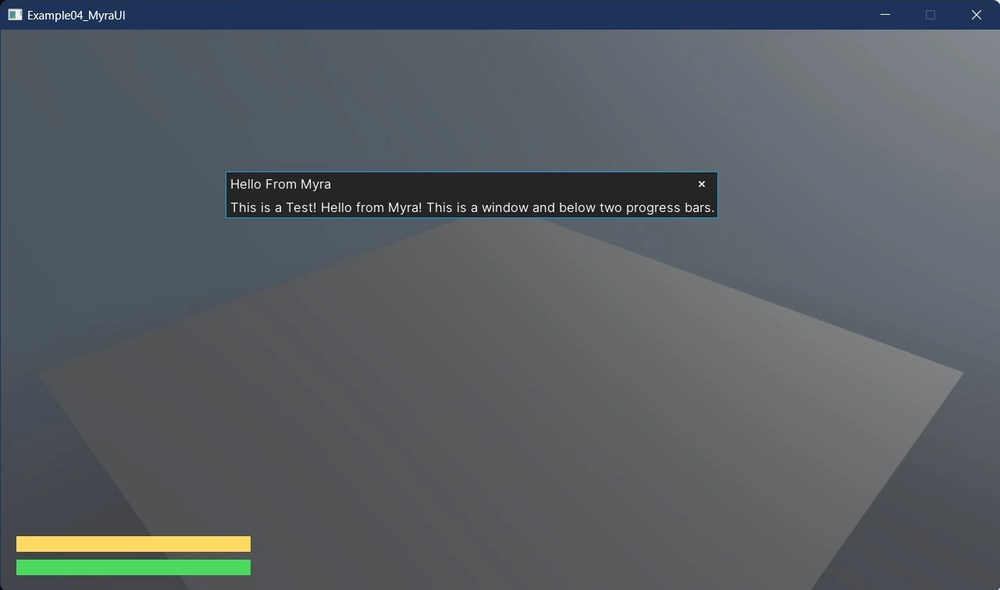

Myra UI - Draggable Window, GetService()
This example showcases how to integrate Myra, an external UI library, into your game developed with Stride. Myra provides a rich set of widgets and functionalities to enhance the graphical user interface of your game.
Key features in this example:
Draggable Window: The example demonstrates how to implement a draggable window within the game using Myra's UI components. This draggable window serves as a movable and interactive element that can host other widgets, thus offering a dynamic interface experience for the player.
Health Bar: This example features two distinct health bars. The first one is statically defined within the
MainViewclass, while the second is dynamically added during runtime. Both bars can be customized to represent a variety of in-game attributes, such as player health, experience, or other performance metrics.Dynamic Initialization: The UI components, including the health bar, are initialized dynamically during the game's runtime. This allows for greater flexibility and responsiveness in the game's UI.
Service Retrieval: The example illustrates the use of
GetService()to retrieve services dynamically, thus fostering loose coupling between various components of the game. This practice promotes code reusability and easier maintenance.
By following this example, you will gain insights into how to extend your game's capabilities by leveraging external libraries for UI and best practices for service retrieval and dynamic UI component initialization.

View on GitHub.
using Example04_MyraUI;
using Stride.CommunityToolkit.Bepu;
using Stride.CommunityToolkit.Engine;
using Stride.CommunityToolkit.Rendering.Compositing;
using Stride.CommunityToolkit.Skyboxes;
using Stride.Engine;
using Stride.Games;
using var game = new Game();
// State flag to track health bar visibility
bool isHealthBarVisible = false;
game.Run(start: Start, update: Update);
void Start(Scene rootScene)
{
SetupBase3DScene();
}
void Update(Scene rootScene, GameTime time)
{
InitializeHealthBar();
}
void SetupBase3DScene()
{
game.AddGraphicsCompositor()
.AddCleanUIStage() //optional
.AddSceneRenderer(new MyraSceneRenderer());
game.Add3DCamera().Add3DCameraController();
game.AddDirectionalLight();
game.AddSkybox();
game.Add3DGround();
}
// Initializes the health bar if it is not already visible.
void InitializeHealthBar()
{
if (isHealthBarVisible) return;
var mainView = game.Services.GetService<MainView>();
if (mainView == null) return;
// Create and add a new health bar to the main view
mainView.Widgets.Add(UIUtils.CreateHealthBar(-50, "#FFD961FF"));
isHealthBarVisible = true;
}
MyraSceneRenderer.cs
This class provides functionality for rendering Myra-based user interfaces in a Stride game.
using Myra;
using Myra.Graphics2D.UI;
using Stride.Engine;
using Stride.Games;
using Stride.Graphics;
using Stride.Rendering;
using Stride.Rendering.Compositing;
namespace Example04_MyraUI;
/// <summary>
/// Provides functionality for rendering Myra-based user interfaces in a Stride game.
/// </summary>
/// <remarks>
/// This renderer uses the Myra UI library to render the user interface and integrates it into the Stride rendering pipeline.
/// </remarks>
public class MyraSceneRenderer : SceneRendererBase
{
/// <summary>
/// Gets or sets the root of all UI elements to be rendered.
/// </summary>
/// <remarks>
/// The desktop serves as the root container for all UI elements rendered by Myra.
/// </remarks>
private Desktop? _desktop;
/// <summary>
/// Gets or sets the main view of the application UI.
/// </summary>
/// <remarks>
/// The main view contains the primary UI elements that the user will interact with.
/// </remarks>
private MainView? _mainView;
/// <summary>
/// Initializes the core rendering properties.
/// </summary>
/// <remarks>
/// This method sets up the Myra environment, configures the main view, and associates it with the desktop.
/// </remarks>
protected override void InitializeCore()
{
base.InitializeCore();
MyraEnvironment.Game = (Game)Services.GetService<IGame>();
InitializeMainView();
InitializeDesktop();
}
/// <summary>
/// Initializes the main view and adds it to the Stride services.
/// </summary>
private void InitializeMainView()
{
_mainView = new MainView();
Services.AddService(_mainView);
}
/// <summary>
/// Initializes the desktop and sets the root view.
/// </summary>
private void InitializeDesktop()
{
_desktop = new Desktop
{
Root = _mainView
};
}
protected override void DrawCore(RenderContext context, RenderDrawContext drawContext)
{
// Clear depth buffer
drawContext.CommandList.Clear(GraphicsDevice.Presenter.DepthStencilBuffer, DepthStencilClearOptions.DepthBuffer);
// Render UI
_desktop?.Render();
}
}
MainView.cs
This class creates the main UI window MainView and the health bar using HorizontalProgressBar.
using Myra.Graphics2D.UI;
namespace Example04_MyraUI;
/// <summary>
/// Represents the main user interface view for the application.
/// </summary>
/// <remarks>
/// The MainView class is responsible for creating and managing key UI elements such as a health bar and a test window.
/// </remarks>
public class MainView : Panel
{
/// <summary>
/// Gets the health bar UI element.
/// </summary>
/// <remarks>
/// The health bar shows the current health status.
/// </remarks>
public HorizontalProgressBar HealthBar { get; private set; } = null!;
/// <summary>
/// Gets the test window UI element.
/// </summary>
/// <remarks>
/// The example window is used for demo purposes and contains a sample label.
/// </remarks>
public Window ExampleWindow { get; private set; } = null!;
/// <summary>
/// Initializes a new instance of the <see cref="MainView"/> class.
/// </summary>
public MainView()
{
InitializeHealthBar();
InitializeTestWindow();
}
/// <summary>
/// Initializes the health bar UI element.
/// </summary>
private void InitializeHealthBar() => Widgets.Add(UIUtils.CreateHealthBar(-20, "#4BD961FF"));
/// <summary>
/// Initializes the test window UI element.
/// </summary>
private void InitializeTestWindow()
{
var label = new Label
{
VerticalSpacing = 10,
Text = "This is a Test! Hello from Myra! This is a draggable window and below two progress bars."
};
ExampleWindow = new Window
{
Title = "Hello From Myra",
Left = 590,
Top = 200,
Content = label
};
Widgets.Add(ExampleWindow);
}
}
UIUtils.cs
This class contains helper methods to create UI elements, which are used in multiple places in the example.
using Myra.Graphics2D.Brushes;
using Myra.Graphics2D.UI;
namespace Example04_MyraUI;
/// <summary>
/// Utility class to create custom UI widgets.
/// </summary>
public static class UIUtils
{
/// <summary>
/// Creates a new <see cref="HorizontalProgressBar"/> with the given top position and filler color.
/// </summary>
/// <param name="top">The top position of the progress bar.</param>
/// <param name="filler">The filler color of the progress bar.</param>
/// <returns>A new <see cref="HorizontalProgressBar"/> instance.</returns>
public static HorizontalProgressBar CreateHealthBar(int top, string filler)
{
return new HorizontalProgressBar
{
HorizontalAlignment = HorizontalAlignment.Left,
VerticalAlignment = VerticalAlignment.Bottom,
Value = 100,
Filler = new SolidBrush(filler),
Left = 20,
Top = top,
Width = 300,
Height = 20,
Background = new SolidBrush("#202020FF")
};
}
}